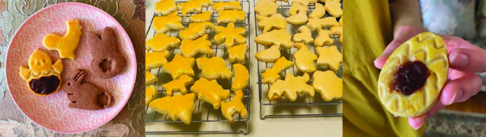

Mailänderli Cookies
The cookie is still warm and part of it melts on your tongue. The sweetness from the sugar and sourness from the lemon dissolves to reach your taste buds. The more complex aromas of vanilla, citrus, and caramelized sugar drift to your olfactory cells. The texture perfectly complements the flavors, a crumbly but soft base with a hint of denseness from a thin layer of egg wash. Flawless, as far as you could tell.
This recipe is matched with “Shortbread Cookies”. It’s the recipe that I follow throughout the story. Mailänderli is the German word for butter biscuits. My grandmother gave this recipe to my brother and eventually to me. I bake Mailänderli cookies for Christmas and Easter since they make amazing gifts!
Recipe makes around 40 cookies
Ingredients
Equipment
- Two mixing bowls (one large, one medium)
- Scale and/or measuring cups1
- Electric mixer
- Rubber spatula
- Sifter
- Rolling pin
- Cookie cutters
- Ruler to measure cookie height
- Baking trays and parchment paper
- Pastry brush
- Cooling rack
Cookie Dough
- 17 1/2 tbsps (250 grams) butter at room temperature2
- 3/4 cup (180 grams) granulated sugar
- 2 eggs at room temperature
- 1/2 tsp vanilla extract/vanilla powder
- 1/4 tsp salt
- 1 tbsp lemon zest
- 3 tbsps lemon juice3
- 4 cups (500 grams) all-purpose flour
- 1 tsp (4.8 grams) baking powder
Egg Wash
- 1 egg yolk
- 1 tbsp heavy cream (optional)4
Instructions
- Preheat: preheat oven to 350°F
- Mix the dry ingredients: in the medium mixing bowl, combine the flour and baking powder. Stir until ingredients are well distributed
- Cream butter: in the large mixing bowl, cream the butter on medium speed until smooth. Usually this takes around 5 minutes
- Add the sugar: add granulated sugar and cream on medium speed until mixture is pale yellow, light, and fluffy. Takes around another 5 minutes. Use a rubber spatula to scrape the sides of the bowl one or twice while mixing
- Add in remaining wet ingredients: add in the eggs one at a time, mixing on medium-low speed until incorporated. Add in the vanilla extract/powder, salt, lemon zest, and lemon juice. Mix until evenly combined
- Add dry to wet: in several batches, sift the dry ingredients into the wet ingredients. For each batch, mix the dough together until most of the flour disappears5. After adding in the last batch, knead/mix the dough until all traces of flour disappear. The dough should feel like soft clay
- Refrigerate dough: chill the dough in the fridge for at least 2 hours and up to 3 days
- Cut out cookies: roll the dough to 1 cm thick6. Use cookie cutters to cut out shapes. Transfer the cookies to baking trays lined with parchment paper
- Final touches before baking: coat the tops of each cookie with egg wash
- Bake: bake cookies at 350°F for 15 minutes. When cookies are slightly brown on the bottom, then they are ready
- Cool: cool cookies on baking trays for 10-20 minutes before transferring them to a cooling rack. At this point, you can start eating them! :)
Tips and Tricks
- I like to use a scale for dry ingredients and measuring cups for liquids
- It’s important for the butter to be at room temperature before creaming it. You can tell that butter is at room temperature if it’s malleable to the touch. Microwaving to soften the butter isn’t the same since it won’t trap enough air
- The amount of lemon you add is up to you. If you want a stronger lemony scent, then add more. You can also just add the zest and juice from one lemon to keep things easier
- If you want the cookies to have an orange top, then skip the heavy cream. If you want a more pale, golden color, then add the heavy cream
- Eventually, the dough might become too thick to mix with the electric mixer, so knead the dough with your hands
- The thickness is also adaptable. If you want crispier cookies, make them thinner. If you want them to be more moist and cakey, then make them thicker. I would recommend 1-1.5 cm as a good starting range